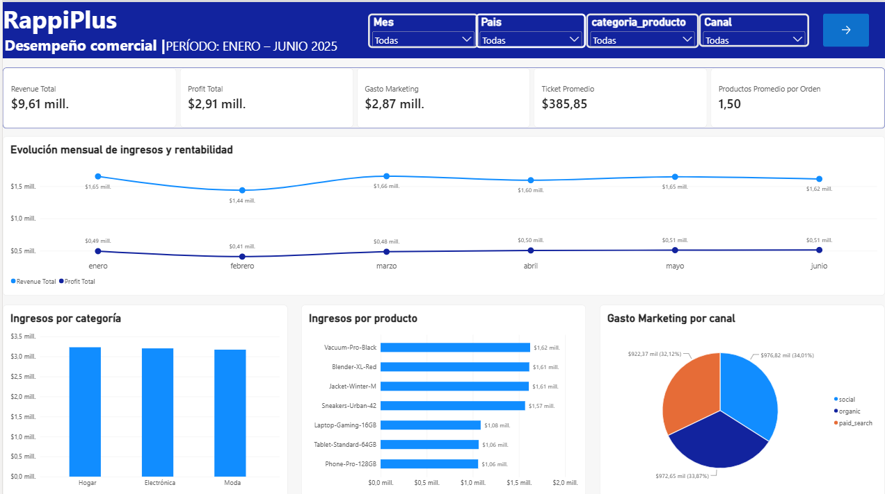

Transformando datos en información para la toma de decisiones.
Soy Contadora Pública, especialista en Impuestos y graduada del programa de Análisis de Datos de TripleTen. Combino mi experiencia en el área contable y financiera con conocimientos en análisis de datos para transformar información en hallazgos útiles para la toma de decisiones.
Me caracterizo por mi capacidad analítica, atención al detalle, resolución de problemas y orientación a resultados.
Descargar dashboard en Power BI (.pbix)

Proyecto integral de análisis de datos orientado a evaluar el desempeño comercial, la rentabilidad y el comportamiento de los usuarios de una plataforma digital.
Proceso desarrollado:
Herramientas: Python, Pandas, SQL, Power BI, DAX y Power Query.
Resultado: Dashboard ejecutivo para visualizar indicadores comerciales y facilitar el análisis de resultados.
Conectemos para explorar oportunidades profesionales.
LinkedIn: Mi perfil de LinkedIn
GitHub: Mi GitHub